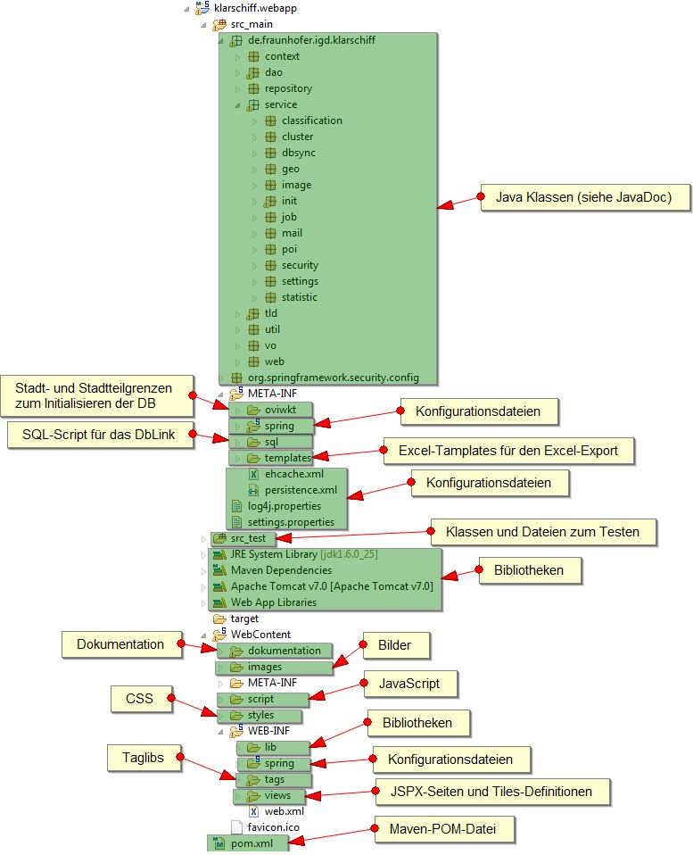
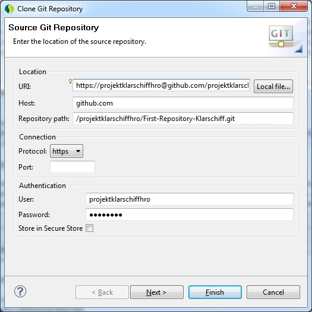
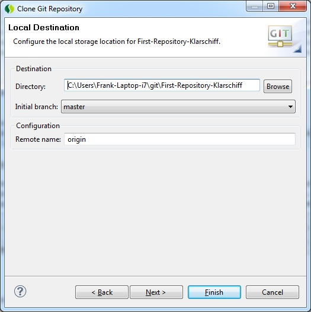
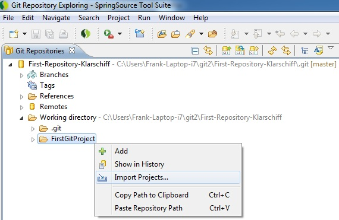

@Deprecated
Entwicklerhandbuch
- Spring
- Projektstruktur
- Webanwendung mit Spring
- Zuständigkeitsfinder
- Einstellungen
- Encoding
- Dokumentation
- Javadoc
- 1. Einleitung
- 1.1 Was ist Klarschiff
- 1.2 Warum Klarschiff
- 1.3 Lizenz
- 1.4 Möglichkeiten zur Mitwirkung
- 1.5 Entwicklerdokumentation
- 2. Allgemeines
- 2.1 Programmiersprache
- 2.2 Software dritter Parteien
- 2.3 Systemvoraussetzungen
- 2.3.1 Zur Ausführung von Klarschiff
- 2.3.2 Zur Entwicklung von Klarschiff
- 2.4 Entwicklungsumgebung
- 2.4.1 Entwicklungsumgebung Frontend
- 2.4.2. Entwicklungsumgebung Backend
- 3. Softwarekomponenten
- 3.1 Email
- 3.2 Sonstiges
- 4. Ausblick
- 5. Quellenangaben
Spring
Für die Entwicklung des Backends wurde das Spring Framework verwendet. Spring ist ein Framework für die vereinfachte Entwicklung von Java EE Anwendungen. Beim Backend wurde sehr viel das Prinzip des Dependency Injection verwendet.
Neben Spring Core wurden die folgenden Spring-Projekte im Backend verwendet:
- Spring MVC: Model-View-Controller-Prinzip für die Erstellung von Webanwendungen
- Spring Security: Absicherung von Java-Anwendungen und Webseiten
- Spring LDAP: Zugriff auf LDAP-Systeme
- Spring IDE: Entwicklungsunterstützung bei der Erstellung von Spring-Anwendungen (ist in der STS enthalten)
Projektstruktur
Die Projektstruktur des Backend sieht folgendermaßen aus:

Abbildung: Projektstruktur
In Verzeichnis src_main befinden sich die eigentlichen Java-Klassen, Konfigurationen, Initialwerte und Excel-Templates. Dabei sind unter context Hilfsdateien zum Zugriff auf den ApplicationContext und den Entitymanager zu finden. In dao sind Klassen (Data Access Objects) zum Zugriff auf die Datenobjekte in der Datenbank. Für die Benennung der Tabellen und Attribute in der Datenbank exisitiert unter repository eine Java-Klasse. Unter service sind die verschieden Serviceklassen zu finden, die im Backend an verschieden Stellen verwendet werden und über den ApplicationContext erreichbar sind. Hierzu gehören die Klassen:
- für den Zuständigkeitsfinder (
classification), - für das Ausführen der Webanwendung in einem Cluster (
cluster), - zum Synchronisieren der Frontend- und BackendDb (
dbsync), - zum Zugriff auf den WFS und den TMS (
geo), - zur Manipulation von Bildern (
image), - zur Initialisierung der DB und der Webanwendung (
init), - zum Ausführen von Jobs im Hintergrund (
job), - zum Versenden von Emails (
mail), - zum Erstellen von Excel-Dateien (
poi), - zur Arbeit mit Benutzern und Rechten und zum Zugriff auf ein LDAP-Server (
security), - zum Arbeiten mit Konfigurationseinstellungen (
settings) und - zum Erstellen von statistischen Daten (
statistic).
In tld sind Klassen zur implementierung verschiedener Taglibs zu finden. util stellt verschiedene globale Hilfskalssen und -funktionen bereit. Im Verzeichnis vo sind die eigentlichen Businessobjekte (POJO) vorhanden, die die eigentlichen Daten enthalten und in der Datenbank abgelegt werden. Unter web sind die verschiedenen Controller und Commands für die Implementierung der eigentlichen Weboberfläche nach dem Model-View-Controller-Prinzip zu finden.
Das Verzeichnis META-INF beinhaltet verschiedene Dateien für die Initialisierung der Datenbank (oviwkt, spring und sql), Templates zur Erstellung von Excel-Dateien (templates) sowie Einstellungen und Konfigurationen. Der eigentliche ApplicationContext wird in spring konfiguriert und lässt sich teilweise über die settings.properties anpassen. Der PersistenceContext ist in persistence.xml und ein Cache zu cachen von speziellen Anfragen an das LDAP sowie den WFS istt in ehcache.xml konfiguriert. Die Einstellungen zum Logging sind in log4j.properties festgelegt.
src_test enthält Dateien zum Testen (JUnit, Selenium) verschiedener Funktionen.
Für das Einbinden von Bibliotheken wird Maven verwendet. Die Einstellungen hierzu sind in der Datei pom.xml. Neben den Bibliotheken, die über das Dependency Management von Maven eingebunden werden (Maven Dependencies) arbeitet das System mit den Standardbibliotheken von Java (JRE System Library), den Bibliotheken des Servlet-Container Tomcat (Apache Tomcat v7.0) sowie mit Bibliotheken, die nicht über Maven bezogen werden konnten (Web App Libraries bzw. WebContent/WEB-INF/lib)
Das Verzeichnis WebContent beinhaltet die eigentlichen Dateien für die Webanwendung. Unter dokumentation sind das Benutzerhandbuch und das Entwicklerhandbuch zu finden. Dieses ist ebenfalls der Ort, wo das JavaDoc hin generiert werden soll. Sämtliche Bilder sind unter images zu finden. Unter script sind die verschiedensten JavaScript-Dateien zu finden. styles beinhaltet die CSS-Dateien für die Layoutdefinition. Unter WEB-INF sind die Definition des WebApplicationContext (spring), verscheidenen Definitionen von Taglibs (tags) und die eigentlichen JSPX- sowie Tiles-Dateien (view) zu finden.
Webanwendung mit Spring
Die Webanwendung des Backends wurde auf der Basis von Spring und Spring MVC entwickelt. Spring MVC stellt hierzu das MVC-Pattern bereit. Dabei wird der Presentation-Layer einer Webanwendung folgendermaßen aufgeteilt:
- Model: Dabei handelt es sich um einen Datencontainer. Dieser enthält i.d.R. nur die reinen Datenobjekte und keine weitere Logik. Zu den Datenobjekten gehören hierbei z.B. die eigentlichen Businessdaten (
src_main\de\fraunhofer\igd\klarschiff\vo\...) oder auch spezielle Command-Objekte (src_main\de\fraunhofer\igd\klarschiff\web\..Command), die bei seitenübergreifenden Aktionen verwendet werden. - View: Die View stellt die Daten aus dem Model in einer GUI-Oberfläche dar. Hierfür werden die JSPX-Dateien (
WebContent\WEB-INF\views\..jspx) und teilweise Taglibs verwendet. - Controller: Der Controller steuert die Abfolge, generiert und bearbeitet die Daten des Models und startet den View. Die Controller-Klassen sind unter
src_main\de\fraunhofer\igd\klarschiff\web\..Controller zu finden.
Die einzelnen Controller werden beim Backend durch die Annotation \@Controller beim WebApplicationContext registriert. Die Zuordnung der URLs zu den Controllern erfolgt mit Hilfe der Annotation \@RequestMapping.
Für die Sichten wird beim Backend zusätzlich Tiles verwendet, welches die Verwendung von Templates ermöglicht.
Validierung
Werden innerhalb der Webanwendung Validierungen benötigt, so sind diese i.d.R. in den entsprechenden Command-Objekten zu finden, z.B.:
public void validate(BindingResult result) {
...
assertNotEmpty(this, result, Assert.EvaluateOn.ever, "vorgang.typ", null);
...
}
Dei Validierung wird dabei über die Controller initiert.
@RequestMapping(method = RequestMethod.POST)
public String submit(@ModelAttribute("cmd") VorgangNeuCommand cmd, BindingResult result, ModelMap model, HttpServletRequest request) {
Vorgang vorgang = cmd.getVorgang();
...
cmd.validate(result);
...
}
Zuständigkeitsfinder
Für die automatische Zuordnung einer Zuständigkeit zu einem Vorgang wird im Backend ein Lernalgorithmus verwendet. Hierbei wird eine Bayessches Netz eingesetzt, welches in Weka implementiert ist. Ein Lernalgorithmus wird i.d.R. mit Hilfe einer Trainingsmenge angelernt. Auf dieser Basis kann das Bayessches Netz dann eine Klassifikation durchführen.
Zum Trainieren und Klassifizieren werden dem Lernalgorithmus Tupel bzw. Instanzen bestehend aus verschieden Features bereitgestellt. Bei den Features werden im Backend die Kategorie, berechnete Werte (Abstand innerhalb einer Fläche, Abstand zu einer Fläche, Größe der Fläche) auf Basis der Position zu bestimmten Layern im WFS (Bewirtschaftung, Grünfläche etc.) sowie die Zuständigkeit verwendet. Zur Berechnung der Features ist die Klasse FeatureService verantwortlich. debei werden teilweise Cachingmechanismen verwendet, um wiederholte Berechnung gleicher Werte zu vermeiden.
Als Trainingsmenge werden im Backend die aktuellsten Vorgänge mit einer akzeptierten Zuständigkeit verwendet. Ist die Trainingsmenge nicht ausreichend, wird die Trainingsmenge um zusätzliche Instanzen erweitert, die sich aus vordefinierten Kategorie-Zuständigkeit-Kombinationen ergeben (siehe src_main\de\fraunhofer\igd\klarschiff\vo\Kategorie.java und src_main\META-INF\spring\applicationContext-init.xml).
Wird bei der Benutzung des Systems eine Zuständigkeit akzeptiert, wird die Trainingsmenge des Lernalgorithmuses um die Instanz erweitert und der Lernalgorithmus aktualisiert.
private void updateClassifier(Vorgang vorgang, ClassificationContext ctx) throws Exception {
Instance instance = featureService.createFeature(vorgang, true, ctx);
instance.setDataset(ctx.getDataset());
ctx.getClassifier().updateClassifier(instance);
}
Zusätzlich wir der Lernalgorithmus in periodischen Abständen durch einen Hintergrundjob komplett aktualisiert.
public void reBuildClassifier() throws Exception {
logger.debug("rebuild ClassificationContext");
ClassificationContext ctx = new ClassificationContext();
//Klassifikator neu initialisieren
ctx.setClassifier(new NaiveBayesUpdateable());
//attributes und classAttribut neu initialisieren
featureService.initClassificationContext(ctx);
//Dataset neu laden
ctx.setDataset(new Instances("", ctx.getAttributes(), 0));
ctx.getDataset().setClass(ctx.getClassAttribute());
//Trainingset neu erstellen
Instances trainSet = createTrainset(ctx);
//Klassifikator neu trainieren
ctx.getClassifier().buildClassifier(trainSet);
//neuen context setzen
this.ctx = ctx;
}
Einstellungen
Die Konfigurationen und Einstellungen der Anwendung werden an verschiedenen Stellen vorgenommen. Zentraler Punkt für die Einstellungen ist die settings.properties. Hier können alle Parameter für den Lauf der Anwendung angepasst werden.
Systemspezifischere Anpassungen, die z.B. bei der Weiterentwicklung vorgenommen werden müssen, können im ApplicationContext (src_main\META-INF\spring\..xml), dem WebApplicationContext (WebContent\WEB-INF\spring\webmvc-config.xml)oder an anderen Stellen vorgenommen werden.
Bei den Einstellungen in der settings.properties können Profile verwendet werden. Diese ermöglichen es verschiedene Einstellungen zu definieren, die gleiche Webanwendung auf verschiedenen Rechnern zu deployen und da jeweils unterschiedliche Konfigurationen zu verwenden. Welches Profil verwendet wird kann über die Variable KLARSCHIFF_HRO_PROFILE an den folgenden Stellen festgelegt werden:
- Umgebungsvariable des Rechners
- Java-Laufzeit-Umgebungsvariable
- in der Datei
settings.properties
Die Spezialisierung eines Parameters für ein bestimmtes Profil erfolgt durch ein Voranstellen des Profilnamens in der settings.properties. Die Einstellungen werden beispielsweise folgendermaßen definiert:
mail.from=klarschiffhro@googlemail.com
igd_dev.mail.from=klarschiffhro@igd-r.fraunhofer.de
so wird im Normalfall als Absenderadresse die Emailadresse von Google verwendet. Ist das Profil igd_dev eingestellt, so wird die Emailadresse vom Fraunhofer verwendet.
Die folgenden Einstellungen können in der settings.properties vorgenommen werden:
Mailversand
mail.server.baseurl.backend und mail.server.baseurl.frontend: Die URLs werden bei der Erzeugung von Emails verwendet und sollten auf die entsprechenden URLs des Frontends und Backends verweisen.mail.host: SMTP-Host, der für den Versand der Emails verwendet wirdmail.smtp.starttls.enable: aktiviert (true) oder deaktiviert (false) die Verschlüsselung mit dem SMTP-Host; Eine Aktivierung wird z.B. bei der Verwendung eines Google-Mail-Accounts benötigt.mail.username und mail.password: Benutzername und Passwort für den SMTP-Zugang, wenn dieser benötigt wirdmail.from: Absenderadresse für die vom System versendeten Emailsmail.sendAllMailsTo: Wenn hier eine Emailadresse angegeben wird, werden alle Emails an diese Adresse versendet. Dieses ist beispielsweise zum Test der Emailfunktionen sinnvoll.
Datenbank
database.host, database.port, database.schema, database.dbname, database.username und database.password: Host, Port, Schema, Name der Datenbank, Benutzername und Password der verwendeten Datenbank für das Backend
Datenbanksynchronisation
database.initscript: Hiermit wird festgelegt, ob das SQL-Script, welches für die Synchronisation der Frontend- und BackendDb auf der Basis von dbLink, ausgeführt wird. Das Script wird nur ausgeführt, wenn noch keine Tabellen in der BackendDb vorhanden sind. Die Ausführung erfolgt nach dem Erzeugen der Tabbellen in der BackendDb. Folgende Werte sind möglich: disabled - Script wird nicht ausgeführt, warn - Script wird ausgeführt und es gibt im Log eine Fehlermeldung bei einem Fehler, error - Script wird ausgeführt und der Start des Backends wird im Fehlerfall abgebrochen.dbsync.programdir: Gibt das Verzeichnis an, wo das Programm zum Synchronisieren der Frontend- und BackendDb auf der Basis von Talend Open Studio liegt.
Automatische Jobs
job.monthsToArchivVorgaenge: Alte abgeschlossene Vorgänge in Monaten, bis diese automatisch archiviert werden.job.hoursToRemoveUnbestaetigtVorgang: Alter von unbestätigten Vorgängen in Stunden, bis diese automatisch gelöscht werden.job.hoursToRemoveUnbestaetigtUnterstuetzer: Alter von unbestätigten Unterstützungen in Stunden, bis diese automatisch gelöscht werden.job.hoursToRemoveUnbestaetigtMissbrauchsmeldung: Alter von unbestätigten Missbrauchsmeldungen in Stunden, bis diese automatisch gelöscht werden.
Geo
geo.map.projection: Verwendete Projektion im System
Kartendarstellung mit OpenLayers
geo.map.tms.server: TMS für die Darstellung der Karten im Backendgeo.map.tms.server.layers: Layer des TMS, die bei der Kartendarstellung verwendet werden sollen. Format: [LayerNameInDerAnzeige1]:[LayernameBeimTms1],[LayerNameInDerAnzeige2]:[LayernameBeimTms2],...geo.map.maxExtent: Begrenzen der Daten der Kartegeo.map.restrictedExtent: Maximal anzuzeigende Größe der Kartegeo.map.resolutions: Zoomstufengeo.map.ovi.margin: Darzustellender Umkreis bei der Anzeige eines Ortes
Darstellung eines Vorgangs bzw. des Ortes in einem externen System
geo.map.extern.projection: Projektion im externen System (geo.map.extern.url)geo.map.extern.url: URL zur Darstellung eines Vorganges in einem externen System (es können die Variablen x, y und id verwendet werden)geo.map.extern.extern.url: URL zur Darstellung eines Vorgangs in einem externen System, was von jedem Nutzer im Internet aufgerufen werden kann (es können die Variablen x, y und id verwendet werden)
Anbindung des WFS für den Zuständigkeitsfinder
geo.wfs.url: URL zum Aufruf der Capabilities des WFSgeo.wfs.wfs.exception.handling: ExceptionHandling beim Initalisieren des WFS (warn - Fehlermeldungen werden in das Log geschrieben, error - der Start der Webanwendung wird bei einem Fehler abgebrochen)geo.wfs.ovi.buffer: Umkreis in Metern, der bei der Berechnung der Features für den Zuständigkeitsfinder berücksichtigt werden soll
Proxy
proxy.host und proxy.port: Proxyeinstellungen, die der Server zur Kommunikation mit dem Internet benötigt. Dieses wird z.B. für die Kommunikation mit WFS benötigt.
LDAP
Es kann ein LDAP-Sever verwendet werden oder auf der Basis einer LDIF-Datei lokal ein LDAP mitgestartet werden, der dann verwendet wird. Hierzu ist jeweils der eine Parameter ldap.server.ldif oder ldap.server.url zu setzen und der andere frei zu lassen.
ldap.server.ldif: Wenn der Wert gesetzt ist, wird ein lokaler LDAP gestartet und die Daten aus der angegebenen LDIF-Datei verwendet.ldap.server.url: URL eines LDAP-Servers.ldap.root: Rootpfad für die Anfragen an den LDAPldap.managerDn und ldap.managerPassword: Zugangsdaten für den LDAP-Serverldap.userSearchBase: Pfad in dem nach Benutzern gesucht werden sollldap.userObjectClass: Objektklasse für Benutzerldap.userSearchFilter: Filter zum Suchen von Benutzernldap.groupSearchBase: Pfad in dem nach Gruppen gesucht werden sollldap.groupObjectClass: Objektklasse für Gruppenldap.groupRoleAttribute: Attribut in dem bei den Gruppen die Rolle intern oder extern gesetzt istldap.groupSearchFilter: Filter in denen bei den Gruppen nach Benutzern gesucht wirdldap.groupObjectId: Attribut mit der ID für die Gruppeldap.userAttributesMapping: Mapping für das Auslesen der Daten eines Benutzers beim LDAP. Format: [AttributNameAnwendung1]=[AttributNameLdap1],[AttributNameAnwendung2]=[AttributNameLdap2],...ldap.roleAttributesMapping: Mapping für das Auslesen der Daten einer Gruppe beim LDAP. Format: [AttributNameAnwendung1]=[AttributNameLdap1],[AttributNameAnwendung2]=[AttributNameLdap2],...
- Logins mit Password auf der Loginseite #
show.logins=false
igd_dev.show.logins=true
wheregroup_test.show.logins=true
- Anzahl Unterstützer bei Ideen #
vorgang.idee.unterstuetzer=10
- Fehler #
show.fehler.details=true
bug.tracking.url=https://trac.wheregroup.com/klarschiff.hro/
- Cluster #
cluster.mode=none
hro_test.cluster.mode=multipleMachines
igd_dev.cluster.mode=singleMachine
- Version #
version=1.0 beta (M_10 M1) 2011-09-26
- Open Layers
- GeoTools
- ApplicationContext
* xml
* settings
* autowired
* de...context* JPA
* Hibernate
* Hibernate spatial
* persitenz.xml
* entitimanager- Cluster
- EHCache
- WMS, WFS
- Mail
- Apache POI
* Excel* vo
* vo.extra- Postgres, Postgis
- JQuery
- DD Drop Down Panel
- JavaScript
- Tiles
Encoding
java Cp1252
jspx UTF-8
Dokumentation
http://help.eclipse.org/helios/index.jsp?topic=/org.eclipse.mylyn.wikitext.help.ui/help/Mylyn%20WikiText%20User%20Guide.html
Javadoc
Project -> Generate Javadoc -> Next -> on the last page, in Extra Javadoc options write:
-encoding Cp1252 -charset UTF-8 -docencoding UTF-8
Themenvorschläge:
###################
Entwicklerdokumentation
Version 1.0
Oktober 2011
Ansprechpartner
Name1 & Name2
Email
Mail@Adresse.de
Webseiten
http.//www.klarschiff.de
https://github.com/klarschiff
1. Einleitung
1.1 Was ist Klarschiff
1.2 Warum Klarschiff
1.3 Lizenz
Klarschiff wird unter der Open-Source Lizenz GNU General Public License (GPL) entwickelt. Mehr Informationen dazu finden Sie unter http://www.opensource.org.
1.4 Möglichkeiten zur Mitwirkung
Klarschiff kann weiterentwickelt werden und zwar nicht nur von den ursprünglichen Entwicklern, sondern auch von anderen Softwareentwicklern, die Interesse daran haben an diesem Open-Source Projekt mitzuwirken.
1.5 Entwicklerdokumentation
Ziel dieser Dokumentation ist es, Softwareentwickler bei der Programmierung von Klarschiff oder bei der Verwendung von Teilen des Programmcodes (z.B. Geokomponenten, Email Service...) zu unterstützen. (Hierbei handelt es sich allerdings nicht um eine API Dokumentation.) Zum Verstehen der Dokumentation werden Grundlagenkenntnisse in Java sowie deren Technologien (z.B. .jspx) und Software-Architekturmustern wie MVC (Model-View Controller) vorausgesetzt.
2. Allgemeines
2.1 Programmiersprache
Klarschiff wurde in der Programmiersprache Java unter Verwendung der Java 2 Standard Edition (J2SE) 6.0 der Firma SUN Microsystems (Tochterunternhemen von Oracle) entwickelt. Als serverseitige Web-Programmiersprache zur dynamischen Erzeugung der HTML-Ausgaben wurden JavaServer Pages Extended eingesetzt.
(Vorteile von Java 6 gegenüber anderen Programmiersprachen bzw. der Vörgängerversion Java 5 erläutern? Warum für Java entschieden? > plattformunabhängig, weite Verbreitung, leichte Einbindung Software Dritter=Verkürzung Entwicklungszeit)
2.2 Software dritter Parteien
Für Klarschiff wurde die nachfolgende freie Software integriert:
I. Karte „openMaps”?
II. ...
2.3 Systemvoraussetzungen
2.3.1 Zur Ausführung von Klarschiff
Zur Ausführung von Klarschiff wird eine eine Java Runtime Environment (JRE) der Java 2 Standard Edition (J2SE) vorausgesetzt. Minimum ist die aktuelle Version 6.0 (auch 1.6 genannt). (Zu älteren Versionen ist der Byte-/Sourcecode wegen der Compatibility Policies von SUN nicht kompatibel.)
Diese Java-Version ist auf den Standard-Betriebssystemen nicht vorinstalliert. Das bedeutet Sie muss heruntergeladen und installiert werden (Download JRE. Klarschiff wird in Form einer WAR (Web Archive) File (und JAR?) angeboten, für die das JRE installiert sein muss.
2.3.2 Zur Entwicklung von Klarschiff
Zur Entwicklung muss das Java Development Kit (JDK) mindestens in der Version 6.0 der Java 2 Standard Edition (J2SE) vorhanden sein. (Download JDK
2.4 Entwicklungsumgebung
2.4.1 Entwicklungsumgebung Frontend
(TODO: besser strukturieren)
Spring (Version 2.7.1, Zeichencodierung jspx-Seiten: UTf-8, java Cp1252)
Datenbank (PostgreSQL 8.4 oder 9.0 mit PostGIS 1.5, x86 = 32 Bit)
- Eingabe folgender Daten in pgAdmin
Frontend:
DB: klarschiff_backend
User: klarschiff_backend
Pass: klarschiff_backend
Port: 5432
2.4.2. Entwicklungsumgebung Backend
Datenbank aufsetzen
Als Datenbank verwendet Klarschiff PostgreSQL ab der Version 8.4. Für PostgreSQL wird noch die Erweiterung PostGIS ab der Version 1.5 eingesetzt. PostgreSQL mit PostGIS bildet eine Geodatenbank.
- PostgreSQL (Download und Installation)
- PostgreSQL herunterladen (http://www.postgresql.org/download/)
- Bei der Installation den Standardport 5432 beibehalten.
- PostGIS (Download und Installation)
- Download erfolgt über den in PostgreSQL enthaltenen Application Stack Builder (als Admin starten!)
- Im Application Stack Builder die Registerkarte Spatial Extension öffnen und PostGIS auswählen
- Benutzer anlegen
- in pgAdmin Doppelklick auf Server > PostgreSQL
- Rechtsklick auf Login-Rollen > „Neue Login-Rolle...” (z.B. Rollenname: klarschiff_backend, Passwort=klarschiff_backend)
- Beim Karteireiter Rollenprivilegien entsprechende Rechte vergeben
- Datenbank anlegen
- in pgAdmin Doppelklick auf Server > PostgreSQL > Rechtsklick auf Datenbank > "Neue Datenbank..."
- Eigenschaften:
- Name: klarschiff_backend
- Kodierung: UTF-8
- Vorlage: template_postgis
- Das Erstellen der Datenbankstruktur erfolgt beim ersten Start von Klarschiff automatisch
Java
(TODO: redundant, d.h. entweder dies oder bei 2.3 Systemvoraussetzungen löschen)
Java herunterladen und installieren:
Das Projekt Klarschiff ist in der Programmiersprache Java geschrieben und deshalb wird ein JDK (min. Java SE 6) benötigt.
Tomcat
Tomcat herunterladen und installieren:
Für Klarschiff wird eine Laufzeitumgebung/Servlet-Container benötigt. Hierzu wird der Apache Tomcat ab der Version 7 benötigt.
Unter Win7 sollte der Tomcat nicht unter dem Verzeichnis C:\[Programme]\ ausgepackt werden, da bei der Verwendung vom Tomcat ggf. in dem Verzeichnis Schreiboperationen notwendig sind, wofür dann wiederum Adminrechte notwendig sind.
Spring Tool Suite (STS)
STS herunterladen und installieren: STS ist ein speziell für die Arbeit mit Spring angepasstes Eclipse. Es ist empfehlenswert für die Arbeit mit Klarschiff daher STS zu verwenden. Alternativ kann natürlich auch mit einem üblichen Eclipse gearbeitet werden. Hier sind dann ggf. noch verschiedene Plugins nachzuinstallieren.
STS kann nun gestartet werden. Hierbei ist ein entsprechender workspace zu verwenden.
Proxy konfigurieren (optional):
Wenn ein Proxy zur Verbindung mit dem Internet verwendet wird, muss dieser an zwei Stellen eingestellt werden. Zum einen sind die Proxyeinstellungen für das STS vorzunhemen (Window > Preferences > General > Network Connections). Für die Arbeit mit Maven ist ebenfall der Proxy in der settings.xml (Window > Preferences > Maven > Installations > settings.xml) einzustellen. Wie man einen Proxy für Maven in der settings.xml einstellt ist unter http://maven.apache.org/guides/mini/guide-proxies.html zu erfahren.
Tomcat registrieren:
Der ausgepackte Tomcat ist im STS zu registreren (Window > Preferences > Server > Runtime Environments > Add > Apache > Apache Tomcat v7.0 > ...). Beim tomcat installation directory ist dann das Verzeichnis des ausgepackten Tomcat anzugeben.
Git Client einrichten:
(TODO: detailliertere Anleitung erstellen)
Das Projekt Klarschiff befindet sich in einem GitRepository (Link...). Hierfür ist ein entsprechender Git Client zu installieren. (Evtl. Der Git Client lässt sich direkt über das Dashboard in STS installieren (Help > Dashboard > Extension)).
Projekt aus dem Git Repository auschecken:

Das Projekt klarschiff.webapp kann nun aus dem Git Repository (Bsp. https://github.com/projektklarschiffhro) ausgecheckt werden.
Hierzu muss zunächst zur Git Repository Exploring perpective (Window > Open perspective > Other... > Git Repository Exploring) gewechselt werden. Anschließend auf den Button Clone a Git Repository and add the clone to this view klicken und die benötigten Eingaben erledigen (siehe Abbildung). Es genügt folgenden Text in die URI einzutragen: https://projektklarschiffhro@github.com/projektklarschiffhro/First-Repository-Klarschiff.git, eine Passworteingabe ist natürlich nicht notwendig.

Abbildung: Git Repository Daten
Anschließend klicken Sie beim nächsten Fenster auf Next >. Im darauffolgenden Fenster haben Sie nun die Möglichkeit einen Zielpfad für den Ort des Repositorys festzulegen (siehe Abbildung).

Abbildung: Git Zielpfad für das Repository
Zum Schluss bestätigen Sie nur noch Ihre Eingaben indem Sie auf finish klicken. Das Repository befindet sich nun lokal auf Ihren Computer. Es muss allerdings noch in den Java-Workspace ausgecheckt werden. Dazu öffnen Sie den Ordner Working directory in der Git Repository Exploring perpective wählen das gewünschte Projekt aus (z.B. FirstGitProject) unnd machen dort einen Rechtsklick drauf und wählen Import Projects... aus (siehe Abbildung). Anschließend Import Existing Projects auswählen, auf Next > klicken und mit Finish bestätigen.

Abbildung: Auschecken des Projektes in den Workspace
Das Projekt klarschiff.webapp kann nun ausgecheckt werden. Nach dem Auschecken fängt die STS sofort an über Maven die ganzen Java Bibliotheken herunterladen. Dieses kann ggf. lange dauern oder auch mal zum Stillstand führen. Speziell mit den Proxyeinstellungen kann es zu Problemen kommen, die aber nicht immer nachvollziehbar sind. Wenn es also zu Problemen kommt, die STS mal mit dem Taskmanager beenden und neustarten.
Projekt zum Server hinzufügen:
Damit das Projekt auch vom Tomcat ausgeführt wird, ist dieses in der View Server bei einem entsprechendem Tomcat zu registrieren. Der Tomcat muss ggf. zuvor in der View hinzügefügt werden (Rechtsclick in die View > New > Server > ...). Beim entsprechendem Tomcat kann nun das Projekt Klarschiff hinzugefügt werden (Rechtsclick auf den Tomcat > Add and Remove ... > ...). Da der Tomcat beim Start ggf. etwas länger braucht (speziell beim ersten mal) kann hierfür auch die Startzeit etwas hochgesetzt werden (Doppelclick auf den tomcat > Timeouts > ...).
Getting Started: Nun ist alles so weit, dass das ganze gestartet wird und man mit der eigentlichen Arbeit anfangen kann.
3. Softwarekomponenten
3.1 Email
Die Klassen für die Email-Funktion befinden sich im package de.fraunhofer.igd.klarschiff.service.mail. Es hat folgenden Inhalt:
Klassen:
- JavaMailSenderImpl.java
- MailSenderJob.java
- MailService.java
Die Darstellung des Mail-Formulars auf der Webseite wird mittels einer .jspx Seite realisiert und befindet sich unter WebContent > WEB-INF > views > vorgang > printEmail
Anzeige
email.jspx (Email-Formular)
emailSubmit.jspx (Bestätigungsfenster)
Sie haben einerseits die Möglichkeit eine Email mit dem eigenen Mail-Client zu versenden oder ein Formular zu benutzen. Bei der Verwendung des Mail-Formulars können Sie zusätzlich noch bestimmen welche Daten (Karte, Foto, Kommentare, Missbrauchsmeldungen) Sie als Anhang mitsenden wollen. Bei Verwendung des eigenen Email-Clients werden automatisch alle Daten mitgesendet.
Die Klasse JavaMailSenderImpl.java hat die Aufgabe des Setzens des Usernamens und Passwortes.
3.2 Sonstiges
Drucken / Foto / Fehlerbehandlung (z.B. assertNotEmpty) / Datenbank (hibernate) Geokomponenten (Karte) / Exportieren (Suchergebnisse > Excel)
Jedes Paket beschreiben was es enthält? z.B. de.fraunhofer.igd.klarschiff.web
4. Ausblick
5. Quellenangaben